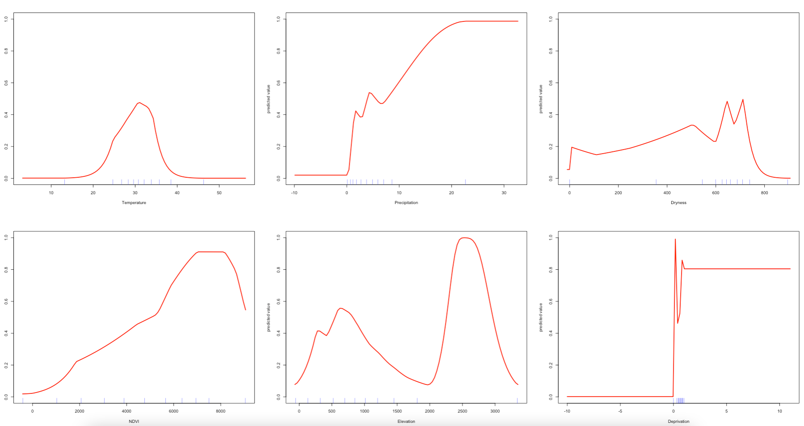

Week 5: Ecological Niche Models
1 Suitability Mapping: Part 2
1.1 Introduction
1.1.1 Lecture video (Length: 01:06:42)
1.1.2 Computer practical video (Length 02:00:01)
Last week, we described how knowledge-driven methods informed by expert opinion (often drawn from experience or literature) can be used to predict locations that are suitable (or favourable) for a specific outcome given a set of environmental factors, which in turn, can be outputted as a thematic raster map. Last week’s approach uses a mixed (i.e., qualitative and quantitative) methodology through the use of Overlay Mapping and Analytical Hierarchy Process (AHP) for suitability mapping, and these approaches are used strictly when there are no point occurrence data.
This week, we are using distributional models, often term as either: Ecological (or Environmental) Niche Models, or Environmental or Habitat Suitability Models. These are quantitative methods that use occurrence data in conjunction with environmental data to make a correlative model of the environmental conditions that meet an outcome’s environmental (or ecological) requirements, which in turn, can predict the relative suitability of habitat for that outcome. It has many applications in ecology, epidemiology, disaster risk reduction and social sciences. Today, we are going to use the Maximum Entropy Model (MAXENT) to infer zones for disaster hazards such as wildfires in California given a set of predictor variables (i.e, climate, vegetation, anthropogenic and socioeconomic risk factors which are raster).
1.1.3 Learning outcomes
We are going to learn the following steps:
- Handling of point locations of occurrence data (i.e., points of fires) and preparing it as testing and training data;
- Handling of predictor variables (i.e., raster) and compiling them into a raster stack object, as well as perform extraction of raster values to the points of fire locations;
- Generating a Niche model using the
maxent()from points, and use the stacked raster values to fit a model to estimate probability (or trigger points) of a fire hazard; - Testing for model validation using ROC and AUC curves, and producing a surface based on threshold to delineate regions for suitability (in context probable trigger points for wildfires).
1.1.4 Datasets & setting up the work directory
Before you begin do make sure to download all data by clicking here. Create a folder on called “Week 5” within your “GEOG0114” folder stored in the desktop of your personal computer. Make sure to extract all data from the zip folder and store it into “Week 5” folder. Open a new R script and set the work directory to Week 5’s folder.
For Windows, the work directory will be:
setwd("C:/Users/AccountName/Desktop/GEOG0114/Week 5")For MAC, the work directory will be:
setwd("/Users/AccountName/Desktop/GEOG0114/Week 5")1.1.5 Installing Java on Windows, macOS (Intel or M1/M2) operating system
Before we start anything, we will need to install Java for the appropriate operating system in order to follow this practical. You can download the latest version of Java accordingly:
Warning
- For Windows or macOS (Intel or M1/2/3) users - please download the latest version of Java [HERE]. For macOS M1/2/3 users - please download Java for macOS ARM64. If you are running on a macOS Intel (x86_64) - please make sure to download the x86_64 version of the JRE.
1.1.6 Installing and loading the required packages
Next, we will need to load the following packages:
raster: Raster/gridded data analysis and manipulationsf: Simple Featuressp: Package for providing classes for spatial data (points, lines, polygons and grids)spdep: Access to spatial functions suchspsample()needed for generating background pointstmap: Thematic Mapping
The above packages raster sf, sp, spdep & tmap should have been installed in the previous session(s). However, we will need to install the following new package(s):
dismo: Provides access to methods for niches distribution modelling in RStudio.rJava: Low-level interface for Java. Themaxent()function depends on this so it must be installed.terra: Provides access to extra functions for processing raster dataexactextractr: Provides access to extra functions for processing raster data e.g.,exact_extract()
# Install the packages with install.package():
install.packages("dismo")
install.packages("rJava")
install.packages("terra")
install.packages("exactextractr")[A] For Windows/macOS (Intel) users:
Use the following code to load the packages in RStudio:
# Load the packages with library():
library("raster")
library("dismo")
library("tmap")
library("sf")
library("rJava")
library("spdep")
library("terra")
library("exactextractr")[B] For macOS (M1/M2) users:
Please use the following code to first configure your macOS system by setting the system’s environment accordingly to this Java home path /Library/Java/JavaVirtualMachines/zulu-8.jdk/Contents/Home with the Sys.setenv() function, and then load the packages:
# Set the system environment to this location with Sys.setenv()
Sys.setenv(JAVA_HOME = "/Library/Java/JavaVirtualMachines/zulu-8.jdk/Contents/Home")
# Load the packages with library():
library("raster")
library("dismo")
library("tmap")
library("sf")
library("rJava")
library("spdep")
library("terra")
library("exactextractr")
Important
For macOS M1/M2 users - please use the Sys.setenv() function to configure your macOS system to that Java home path accordingly to prevent RStudio from crashing with that annoying Abort message whenever the maxent() function is executed.
1.1.7 Loading datasets
We will be dealing with both point occurrence and raster data for this exercise. The point data are remote-sensed fire detection locations across the State of California during the summer period of 2018. We will be using predictor variables that are climatic (i.e., temperature, precipitation, dryness), environmental (vegetation and elevation) and other social-anthropogenic (socioeconomic deprivation) gridded raster data for California.
We will combine them into a MAXENT model in order to quantify the areas that are potential trigger points for wildfires, and whether these variables greatly influencing the risk of a fire hazard.
Let us begin loading the following list of raster files, each is a variable of interest:
- Raster: Temperature named
California_temperature_summer_2018.tif - Raster: Precipitation named
California_precipitation_summer_2018.tif - Raster: Dryness named
California_dryness_summer_2018.tif - Raster: Vegetation (NDVI) named
California_vegetation_summer_2018.tif - Raster: Elevation named
California_elevation_summer_2018.tif - Raster: Deprivation Index named
California_socdeprivation_summer_2018.tif
# load data raster data
temp <- raster("California_temperature_summer_2018.tif")
prec <- raster("California_precipitation_summer_2018.tif")
dryn <- raster("California_dryness_summer_2018.tif")
ndvi <- raster("California_vegetation_summer_2018.tif")
elev <- raster("California_elevation_summer_2018.tif")
sevi <- raster("California_socdeprivation_summer_2018.tif")Load the boundary and county shapefile for California:
- Shape file: California’s boundary border named
.shp - Shape file: California’s County borders named
.shp
# load shapefile data for california
california_border <- read_sf("California_boundary.shp")
california_county <- read_sf("California_county.shp")Load the point occurrence data for California:
# load occurrence fire data in California
california_fires <- read.csv("California_Fire_Summer_2018.csv")
Note
All shape file and raster data (5km resolution) were projected to the CRS: WGS84 4326.
The occurrence data imported into RStudio is a data frame object. We will need to first convert the occurrence data from data frame to a spatial points object by declaring columns longitude and latitude corresponds to x and y, respectively, as well as specifying that it’s CRS is 4326 (in Decimal Degrees). This can be done with st_as_sf() function.
# Convert to sf object
california_fires <- st_as_sf(california_fires, coords = c("longitude", "latitude"), crs = 4326)Let us visualise the study area to examine the spatial distribution of wildfires.
# map the locations of wildfire points
tm_shape(california_county) +
tm_polygons() +
tm_shape(california_fires) +
tm_dots(fill = "red", col = "black", size = 0.1)
Let us visualise the six predictor raster variables that will be used for the Niche modelling with MAXENT. Instead of visual each output individually - you can use tmap_arrange() to create a figure panel for the six images.
# map object of temperature stored in m1
m1 = tm_shape(temp) +
tm_raster(col.scale = tm_scale_continuous(values = "-brewer.spectral"),
col.legend = tm_legend(title = "Mean Temperature", frame = FALSE)) +
tm_shape(california_county) +
tm_polygons(fill_alpha = 0, col = "black") +
tm_layout(frame = FALSE) +
tm_title("A", position = c("left", "bottom"), size = 5)
# map object of precipitation stored in m2
m2 = tm_shape(prec) +
tm_raster(col.scale = tm_scale_continuous(values = "brewer.blues"),
col.legend = tm_legend(title = "mm", frame = FALSE)) +
tm_shape(california_county) +
tm_polygons(fill_alpha = 0, col = "black") +
tm_layout(frame = FALSE) +
tm_title("B", position = c("left", "bottom"), size = 5)
# map object of dryness stored in m3
m3 = tm_shape(dryn) +
tm_raster(col.scale = tm_scale_continuous(values = "brewer.spectral"),
col.legend = tm_legend(title = "mm/0.25yr", frame = FALSE)) +
tm_shape(california_county) +
tm_polygons(fill_alpha = 0, col = "black") +
tm_layout(frame = FALSE) +
tm_title("C", position = c("left", "bottom"), size = 5)
# map object of ndvi stored in m4
m4 = tm_shape(ndvi) +
tm_raster(col.scale = tm_scale_continuous(values = "brewer.greens"),
col.legend = tm_legend(title = "Index", frame = FALSE)) +
tm_shape(california_county) +
tm_polygons(fill_alpha = 0, col = "black") +
tm_layout(frame = FALSE) +
tm_title("D", position = c("left", "bottom"), size = 5)
# map object of elevation stored in m5
m5 = tm_shape(elev) +
tm_raster(col.scale = tm_scale_continuous(values = "brewer.spectral", midpoint = 1500),
col.legend = tm_legend(title = "Meters", frame = FALSE)) +
tm_shape(california_county) +
tm_polygons(fill_alpha = 0, col = "black") +
tm_layout(frame = FALSE) +
tm_title("E", position = c("left", "bottom"), size = 5)
# map object of sevi stored in m6
m6 = tm_shape(sevi) +
tm_raster(col.scale = tm_scale_continuous(values = "brewer.reds"),
col.legend = tm_legend(title = "%", frame = FALSE)) +
tm_shape(california_county) +
tm_polygons(fill_alpha = 0, col = "black") +
tm_layout(frame = FALSE) +
tm_title("F", position = c("left", "bottom"), size = 5)
# stitch the maps together using tmap_arrange() function
tmap_options(component.autoscale = FALSE)
tmap_arrange(m1, m2, m3, m4, m5, m6, nrow = 2)A: Temperature (degree Celsius); B: Precipitation (mm); C: Dryness (Evapotranspiration) (mm/0.25 year); D: Vegetation (NDVI); E: Elevation (meters [m]); & F: Socioeconomic vulnerability index (%)
Important
It is good practice to produce figure outputs of the study area of interest inside the methodology section of an essay, report, dissertation, research paper etc.,. This gives you the opportunity to describe the study area that is under investigation and variables in the methods section.
1.2 Data preparation for the MAXENT analysis
1.2.1 Creating a multi-band raster using the stack() function
Basically, a band is represented by a single matrix of cell values, and a raster with multiple bands contains multiple spatially coincident matrices of cell values representing the same spatial area. For example, the raster object for temp (i.e., temperature) is a single band raster object. But, if we start to stack raster objects prec, dryn, ndvi and so on top of temp, one over the other, then we have created a multi-band raster object.
We need to create this multi-band raster object to enable the following action needed for the analysis:
- To perform the extraction of raster values from all 6 variables on to the occurrence points in one go;
- The entire multi-band raster object is needed for MAXENT estimation and spatial prediction
We use the stack() to stack all raster grids into one object and rename the layers within the multi-band object to names that are tenable.
envCovariates <- stack(temp, prec, dryn, ndvi, elev, sevi)
names(envCovariates) <- c("Temperature", "Precipitation", "Dryness", "NDVI", "Elevation", "Deprivation")1.2.2 Preparing data for pseudo-background points as absence
We need to prepare the background data. What is the background data? With Background data we are not attempting to guess point locations where an event is absent. Here, we are rather trying to characterise the environment of the study region. In this sense, background is the same, irrespective of where the point fire are found or not. Background data establishes the environmental domain of the study, whilst presence data should establish under which conditions a fire is more likely to be present than on average.
In essence, we are creating a set of control points which we act as pseudo-absence. These are typically generated at random. There are several ways of performing this action using other functions such as randomPoints(), sampleRandom and many more.
We are using the spsample() function because it allows the user to specify the boundary for which the background points (i.e., controls) should be randomly generated within. Twice the number of occurrence points are generated (the choice of twice is up to the user). For reproducibility in the random generation, we have set the set.seed() function to this 20000430.
# set the seed
set.seed(20000430)
# we need to coerce 'sf' object california_border into 'sp' object for spsample to work
california_border_sp <- as(california_border, Class = "Spatial")
# here, spsample() generates twice number of fire occurrence points randomly within California's border
background_points <- spsample(california_border_sp, n=2*nrow(california_fires), "random")1.2.3 Extraction of all raster values from predictor variables onto presence-absence points
Now, we are going to extract information from our envCovariates raster stack to both the presence and background points. This can be done using the extract() function.
# perform raster extraction from the environmental covariates on to points
california_fires_env <- extract(envCovariates, california_fires)
background_points_env <- extract(envCovariates, background_points)
Important
After the extraction, the objects california_fires_env and background_points_env exist as a large matrix, and not as a data frame.
For all occurrence points (i.e., presence), we need to add an indicator of 1 to signify presence; while for all background points (i.e., absence) - we need to also add an indicator of 0 to signify absence. We do this because we are modelling a probability and such niche models take outcomes that are from a Bernoulli or Binomial distribution.
# convert large matrix objects to data frame objects and add outcome `fire` indicator
california_fires_env <-data.frame(california_fires_env,fire=1)
background_points_env <-data.frame(background_points_env,fire=0)
# View one of the data frame
head(california_fires_env, n=5)
head(background_points_env, n=5)1.2.4 Preparation of training & test data for prediction & model cross-validation
Now, we need to complete one more step before we construct our wildfire risk model. We have to come up with a way to assess how well our model can actually predict whether we will likely find a trigger point for fires in a particular location. To make this assessment, we will need to perform some ‘cross-validation’ i.e., that is setting aside some of our presence-absence locations, and using them to test the model. In our case, we will randomly withhold 25% of the observations as test data, and retain the other 75% as training data for the prediction.
This means that we will be fitting the model multiple times, withholding each fourth of the data separately, then average the results. This is called a k-fold cross-validation (in our case 4-fold).
However, for our purposes of time, we will just fit the model once to demonstrate what is actually happening for you to get the gist. Ideally, we will need to perform a 4-fold cross-validation and in turn average the estimates across the values for AUC and those for the true positives and negative as described in section 5.4.2.
Use the kfold() function to split the presence data from california_fires_env object into 4 equal parts. This should add an index that makes four random groups of observations. You can hold 25% of the data (i.e., the first portion) by specifying select == 1 as the test data. You can hold the remaining 75% of the data (i.e., the 2nd, 3rd and 4th portion) by specifying select != 1 as the training data.
# set same set.seed() as before
set.seed(20000430)
# using k-fold function to split data into 4 equal parts
select <- kfold(california_fires_env, 4)
# 25% of the fire data use for testing the model
california_fires_env_test <- california_fires_env[select==1,]
# 75% of the fire data use for training the model
california_fires_env_train <- california_fires_env[select!=1,]Repeat the above process for the background points:
# set same set.seed() as before
set.seed(20000430)
# repeat the process for the background points
select <- kfold(background_points_env, 4)
background_points_env_test <- background_points_env[select==1,]
background_points_env_train <- background_points_env[select!=1,]Now, let us row bind the training and test dataset together using the rbind() function:
training_data <- rbind(california_fires_env_train, background_points_env_train)
testing_data <- rbind(california_fires_env_test, background_points_env_test)We are now in the position to execute the distributional niche models.
1.3 MAXENT Analysis
Now, we can fit the niche model using the Maximum Entropy (MAXENT) algorithm, which tries to define the combination of environmental risk factors that best predicts the occurrence of the wildfires in California. The maxent() allows the users to implement such algorithm.
Here are some important notes on it’s usage:
maxent(): This function uses environmental data for locations of known presence and for a large number of ‘background’ locations. It has three mandatory arguments -x,p, andargs.x: In this argument, you must specify the columns of the predictor variables in the training data frame. The first columns in the example are the risk factors we are interested.p: In this argument, you must specify the column containing the presence and absence of fires in the training data frame.args: This allows for additional arguments.
[A] For Windows and macOS (Intel) users, running the maxent() code should look something like:
model_training <- maxent(x=training_data[,c(1:6)], p=training_data[,7], args=c("responsecurves"))[B] For macOS (M1/M2) users, use the tryCatch() on the maxent() code to avoid the Abort warning! The code should look something like:
result <- tryCatch({
model_training <- maxent(x=training_data[,c(1:6)], p=training_data[,7], args=c("responsecurves"))
print("Model trained successfully!")
model_training
}, error = function(e) {
print(paste("Error:", e$message))
NULL
})1.3.1 Examination of the predictor’s contribution and response curves
The results are stored in the model_training object. We can examine which variable has the biggest contribution to the presence of wildfire presences in California:
plot(model_training, pch=19, xlab = "Percentage [%]", cex=1.2)
Important
IMPORTANT NOTES: We can view the contribution estimates for each covariate more precisely by typing in RConsole the following code: model_training@results. Here, we can see the following contribution estimates: NDVI (44.2321%); Elevation (23.5530%); Deprivation (12.0339%); Dryness (9.9266); Temperature (6.8892%); and Precipitation (3.3653%). The contribution estimates should sum up to 100%.
Interpretation: From this plot, we can see that the model is most sensitive to variation in NDVI, followed with additional contributions from land surface elevation, and from increased levels of socioeconomic deprivation (reporting top three).
We can examine as well as the likelihood of fire occurrence and how it responds to variation in these conditions. To see the shape of the response curves estimated by the model, we can use the response() function:
response(model_training)
Important
Interpretation: In the response plots, we are looking at how the probability of fire occurrence (Y-axes, from zero to one) varies with each the environmental predictors (X-axes). From these plots, we can see that the MAXENT models can include complex environmental responses including plateau, linear, and nonlinear shapes, and some which are utterly unclear. For example, if we look at mean temperature during the summer, we can see that the probability for fire occurrence peaks around 0.60 when temperatures are around 30 degrees Celsius. We can also see that the probability of such outcome increases with more and more vegetation during the summer period. Probability in terms of fires in relation to deprivation is a flat line. For precipitation, dryness and elevation - the patterns are unclear.
1.3.2 Model validation
An important part is model validation - this involves assessing how well does the model actually predict the occurrence of wildfires. To evaluate the predictive accuracy of the model, we turn back to our test data i.e., testing_data object, and use cross-validation to test the model.
In our evaluation - there are two main outputs of interest:
AUC(Area Under the Curve), which is a test of model performance where higher values indicate greater accuracy in our predictions. An AUC value of 0.5 is common cut-off point used for assessing model performance. Note that an AUC value of 0.5 or lower is the same as random guessing of presence/absence, while values towards one mean our predictions are more reliable and accurate.max TPR+TNR, which denotes the probability threshold at which our model maximizes the True Positive Rate and the True Negative Rate. It is generally accepted that this is an optimum value at which to set the threshold for binary classification of the predicted probabilities in our mapping outputs. Anything above value is deemed as a region environmentally suitable for outcome.
We use the evaluate() function to perform cross-validation analysis.
# model evaluation use the test data on the trained model for validation
cross_validation <- evaluate(p=testing_data[testing_data$fire==1,], a=testing_data[testing_data$fire==0,], model = model_training)Here are some important notes on it’s usage:
evaluate(): This function used for model evaluation and validation. It has the following arguments -p,a, andmodel.p: In this argument, you must specify the column of outcome and filter on the presence value e.g.,testing_data[testing_data$fire==1,].a: In this argument, you must specify the column of outcome and filter on the absence value e.g.,testing_data[testing_data$fire==0,]model: Specify the full training model object e.g.,model_training.
Now call results and plot AUC curve:
cross_validation > cross_validation
class : ModelEvaluation
n presences : 14120
n absences : 27609
AUC : 0.9074081
cor : 0.7003824
max TPR+TNR at : 0.4054474plot(cross_validation, 'ROC', cex=1.2)
Important
Interpretation: On the receiver operator curve, the 1:1 line give an AUC of 0.5. From our curve and the AUC, it is clear that our model appears to do substantially better than random guessing (high AUC value = 0.907 [90.7%]). The optimal probability threshold at which our model maximizes the True Positive Rate and the True Negative Rate is 0.4054474 (40.55%). Hence, we will use predicted probability > 0.4054 to delineate areas of suitability (or trigger points) for wildfires.
1.3.3 Mapping the predicted probability and suitability
To map the predicted probabilities use the predict() function:
prob_wildfire <- predict(model_training, envCovariates)Generate a predicted probability map from above prob_wildfire object:
# generate a publication-worthy figure
# map of probability
tm_shape(prob_wildfire) +
tm_raster(col.scale = tm_scale_continuous(values = "-brewer.rd_yl_bu"),
col.legend = tm_legend(title = expression(bold("Predicted Probability")), frame = FALSE)) +
tm_shape(california_county) +
tm_polygons(fill_alpha = 0, col = "black") +
tm_compass(type = "arrow", position = c("right", "top")) +
tm_scalebar(position=c("left", "bottom"), text.size = 1, breaks = c(0, 100, 200, 300)) +
tm_layout(frame = FALSE)
Extract the optimal threshold value from cross validation object cross_validation using the threshold() function and use it to reclassify the raster object i.e., prob_wildfire to a binary raster. Recall, the value was 0.4054474. A probability estimate less than 0.4054474 is classed as 0 and anything above as 1. The predicted probability > 0.4054 are the areas in California suitable (or expected trigger points) for wildfires.
# calculate thresholds of models
threshold_value <- threshold(cross_validation, "spec_sens")
# report value
threshold_valueReclassifying raster object prob_wildfire with threshold value:
# prepare threshold total map
create_classes_vector <- c(0, threshold_value, 0, threshold_value, 1, 1)
create_clasess_matrix <- matrix(create_classes_vector, ncol = 3, byrow = TRUE)
create_clasess_matrix> create_clasess_matrix
[,1] [,2] [,3]
[1,] 0.0000000 0.4054474 0
[2,] 0.4054474 1.0000000 1# create new reclassify raster based on prob_wildfires
suitability_wildfires <- reclassify(prob_wildfire, create_clasess_matrix)Generate final output which shows regions as trigger points:
tm_shape(suitability_wildfires) +
tm_raster(col.scale = tm_scale_categorical(values = c("lightgrey", "red"), labels = c("Safe", "Trigger Points")),
col.legend = tm_legend(title = expression(bold("Threshold")), frame = FALSE)) +
tm_shape(california_county) +
tm_polygons(fill_alpha = 0, col = "black") +
tm_compass(type = "arrow", position = c("right", "top")) +
tm_scalebar(position=c("left", "bottom"), text.size = 1, breaks = c(0, 100, 200, 300)) +
tm_layout(frame = FALSE)
1.3.4 Supplementary Code 1: K-fold analysis
Click here to see code:
# split plot panel into 4 segments for 4 AUC plots
par(mfrow=c(2,2))
# create a list() object to dump results inside `eMAX`
eMAX<-list()
# use california_fires_env
# use background_points_env
folds <- 4
kfold_pres <- kfold(california_fires_env, folds)
kfold_back <- kfold(background_points_env, folds)
set.seed(20000430)
# takes a long time to run 4-fold
for (i in 1:folds) {
train <- california_fires_env[kfold_pres!= i,]
test <- california_fires_env[kfold_pres == i,]
backTrain<-background_points_env[kfold_back!=i,]
backTest<-background_points_env[kfold_back==i,]
dataTrain<-rbind(train,backTrain)
dataTest<-rbind(test,backTest)
maxnet_eval <- maxent(x=dataTrain[,c(1:6)], p=dataTrain[,7], args=c("responsecurves"))
eMAX[[i]] <- evaluate(p=dataTest[dataTest$fire==1,],a=dataTest[dataTest$fire==0,], maxnet_eval)
plot(eMAX[[i]],'ROC')
}
aucMAX <- sapply( eMAX, function(x){slot(x, 'auc')} )
# report 4 of the AUC
aucMAX
# [1] 0.9052601 0.9086170 0.9049672 0.9083264
# find the mean of AUC (and it must be > 0.50)
mean(aucMAX)
# [1] 0.9067927
#Get maxTPR+TNR for the maxnet model
Opt_MAX<-sapply( eMAX, function(x){ x@t[which.max(x@TPR + x@TNR)] } )
Opt_MAX
# [1] 0.3703498 0.4434108 0.4275991 0.4465352
Mean_OptMAX<-mean(Opt_MAX)
Mean_OptMAX
# use Mean_OptMAX as threshold for mapping suitability
#Note: that final results is AUC: 0.9067927; threshold: 0.42197371.3.5 Supplementary Code 2: Population at risk analysis
Click here to see code:
# we want to estimate the fraction of the population at risk being exposed to wildfires in california
# using the population density raster 100m (data source: WorldPop [www.worldpop.org])
# loading the raster 'usa_pd_2018_1km.tif'
usa_popn_dens <- raster("usa_pd_2018_1km.tif")
# we are taking the extent of california from shapefile
california_extent <- extent(california_border)
# we are using the extent cropping the US raster down to California
california_cropped <- crop(usa_popn_dens, california_extent)
# we are now masking the grids to the boundary of california
california_masked <- mask(california_cropped, california_border)
tm_shape(california_masked) + tm_raster(style = "cont", title = "Pop/100m", palette= "Blues")
# we are going to upscale the resolution of California popn grids from the original 1000m to approximately 5000m
# at the same time - we will aggregate the 1000m population pixel to result in total population in 5000m per pixel
# note: its not perfect conversion!
# note that 0.0008333 = 100m
# note that 0.008333 = 1000m (1km)
# note that 0.0417 = 5004.2m (~5km)
california_popn_5km <- aggregate(california_masked, fact = 0.0417/0.008333333, fun = sum, na.rm =TRUE)
# identify populations at risk from the suitability map and mask out any values that are not in the trigger zone
high_risk_mask <- suitability_wildfires
high_risk_pop <- california_popn_5km * high_risk_mask
high_risk_pop[high_risk_pop == 0] <- NA
tm_shape(high_risk_pop) + tm_raster(style = "cont", title = "Pop/100m", palette= "Reds") +
tm_shape(california_county) + tm_polygons(alpha = 0)
# derive total population in a county
california_county$total_population <- exact_extract(california_popn_5km, california_county, 'sum')
# derive the total population at risk in a county
options(scipen = 3)
california_county$risk_population <- exact_extract(high_risk_pop, california_county, 'sum')
# calculate the percent of the population at risk in a county
california_county$AtRisk_percent <- california_county$risk_population/california_county$total_population * 100
# creating the final map
# create the labels
Risk_tier <- c("<1.0%", "1.0-9.9%", "10.0-19.9%", "20.0-49.9%", "50.0% & above")
# categorizing the AtRisk_percent column
california_county$AtRiskCat <- NA
california_county$AtRiskCat[california_county$AtRisk_percent>=0 & california_county$AtRisk_percent<1] <- 1
california_county$AtRiskCat[california_county$AtRisk_percent>=1 & california_county$AtRisk_percent<10] <- 2
california_county$AtRiskCat[california_county$AtRisk_percent>=10 & california_county$AtRisk_percent<20] <- 3
california_county$AtRiskCat[california_county$AtRisk_percent>=20 & california_county$AtRisk_percent<50] <- 4
california_county$AtRiskCat[california_county$AtRisk_percent>=50 & california_county$AtRisk_percent<101] <- 5
# visualisation
tm_shape(california_county) +
tm_polygons(fill = "AtRiskCat", fill.scale = tm_scale_categorical(values = c("white", "#ffffe5", "#fed976", "#fc4e2a", "#bd0026"),
labels = Risk_tier), fill.legend = tm_legend(title = "Popn at risk [%]"), col = "black") +
tm_text("NAME", size = "AREA") +
tm_scalebar(position=c("left", "bottom"), text.size = 1, breaks = c(0, 100, 200, 300)) +
tm_compass(type = "arrow", position = c("right", "top"), text.size = 0.9) +
tm_layout(frame = FALSE)1.4 Attributions
This week’s practical uses content and inspiration from:
Taylor, L. 2022. The social side of fire: assessing the inclusion of human social factors in fire prediction models (submitted as a dissertation [for degree in MSc Social & Geographic Data Science] at UCL). Source
1.5 References (see reading list)
- Book: [R Programming] Dorman, M. (2014) Learning R for Geospatial Analysis; Chapter 3: Working with Rasters Click link (Note: Downloadable)
- Book: [Theory] Stockwell, D. (2019) Niche Modeling: Predictions from Statistical Distributions; Chapter 4: Topology; CRC Press; pages: 45-63.
- Online: [Tutorials] Hijmans, R.J., & Elith, J. (2021) Species distribution modelling Click link
- Online: [Tutorials] Kerkhoff, D. (2016) Ecological Responses to Climate Change: Species Distribution Modelling using Maxent Click link
- Paper: [Application] Escobar, L.E., (2020). Ecological Niche Modeling: An Introduction for Veterinarians and Epidemiologists, Frontiers in Veterinary Science Click link
- Paper: [Application] Banks, W.E., (2017). The application of ecological niche modeling methods to archaeological data in order to examine culture-environment relationships and cultural trajectories; Quarternaire Click link
- Paper: [Application] Liao, Y., Lei, Y., Ren, Z., Chen, H., & Li., D., (2017). Predicting the potential risk area of illegal vaccine trade in China; Scientific Reports, Issue 7, 3883. Click link
1.6 Data Sources
- All shape files [Source: California Open Data Portal] Click Here
- Global Wildfires detection points [Source: Fire Information Resource Management System] Click Here
- Environmental data for temperature & precipitation [Source: WorldClim] Click Here
- Socioeconomic vulnerability index (requires user login) [Source: Socioeconomic Data and Applications Center (SEDAC)] Click Here
- Digital Elevation Model [Source: SRTM 90m DEM Digital Elevation Database] Click Here
- Evapotranspiration (aridity) 1.0km [Source: NASA MODIS MOD16A2] Click Here
- Normalised Differenced Vegetation Index (NDVI) 250m [Source: NASA MODIS MOD13Q1] Click Here
- 2018 Population density (1km) for the United States [Source: Worldpop] Click Here
1.7 Practical homework
Suitability mapping of the Aedes mosquito and infestation in Brazil
Many regions in Brazil were hit hard by the Zika virus infection outbreak in 2015. Zika infection is caused by the arboviruses transmitted by the Aedes mosquitoes which are abundant in Brazil. It is a known fact that increased abundance of the Aedes mosquito is typically associated with standing (or stagnant) water which serves as a reservoir or hotspot for breeding. Apart from the presence of standing (or stagnated) water in human dwellings, it is important to consider other intermediate factors that drive the mosquitoes to increase in population size. These factors are the following:
- Temperature
- Precipitation
- Population Density
- NDVI
- Land surface elevation
- Natural lighting
- Urban-rural classification
The above listed variables are gridded datasets which can be downloaded by clicking [HERE]. Create a map which should the following: 1.) The predicted probability of infestation of the Aedes mosquito in Brazil; and 2.) the suitability map based on the max TPR + TNR threshold to illustrate where the Aedes mosquito will thrive in Brazil.
All identified points for mosquito breeding including background points can downloaded from [HERE]. The boundaries for Brazil can be downloaded from [HERE].
The expected output should look like:

Notes:
- Use the following
set.seed(20000430). - The number of pseudo-absences points should be twice the number of presence points.
- Use the following split for training and testing data: 75:25 (i.e., 4 equal parts where 3 is for training and 1 is for testing).
- For the predicted probability map (A), reclassify the predictions to the following categories -
0-0.2,0.2-0.4,0.4-0.6,0.6-0.8and0.8-1.0. - For the second suitability map (B), reclassify the probabilities based on the
max TPR + TNRthreshold i.e., below it as0and labelled as ‘None infested areas’ and above as1labelled as ‘Infested areas’. - Perform a 4-fold validation.
This week’s homework practical was based on the original research paper:
- Musah et al (2023). Coalescing disparate data sources for the geospatial prediction of mosquito abundance, using Brazil as a motivating case study. Frontiers in Tropical Diseases. Volume 4. DOI: https://doi.org/10.3389/fitd.2023.1039735